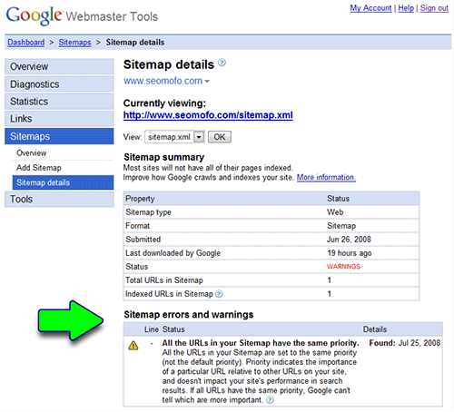
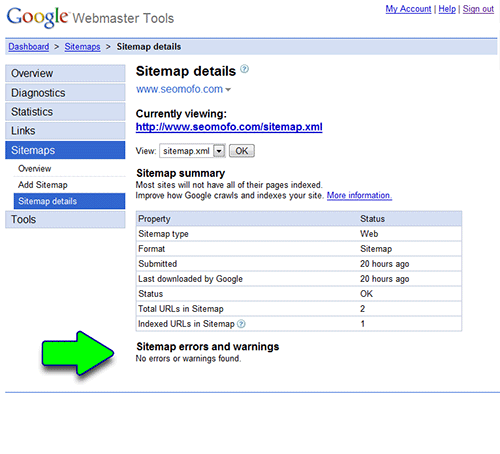

World’s Greatest Low Priority Page
I created this page a long time ago, when this site was nothing but a home page. However, some people seemed to enjoy it enough to submit it to Digg and link to it, so I’ve held onto it. The page you see here is the same content as the original; the only difference is I’ve pasted it into a WordPress page.
This is the second page on my site. The first page was my home page (World’s Greatest SEO), and that’s really the only page I needed, but apparently my simple one-page site has angered the Google gods. The reason for that is simple: my level of pathetic-ness has exceeded the imaginations of the Google engineers who programmed the Google Webmaster Tools.
How’s that? Well, let me explain…
There is a feature in Google’s Webmaster Tools that allows site owners to submit an XML Sitemap, which lists all the URLs for that site and defines the “priority” of each one. The Sitemap information is intended for search engines, and supposedly the priority setting tells a search engine which URLs you consider to be the most important ones on your website. So back in the good o’ days, when I was rockin’ the one-pager website, my XML Sitemap looked like this:
<?xml version=”1.0″ encoding=”UTF-8″?>
<urlset
xmlns=”http://www.sitemaps.org/schemas/sitemap/0.9″
xmlns:xsi=”http://www.w3.org/2001/XMLSchema-instance”
xsi:schemaLocation=”http://www.sitemaps.org/schemas/sitemap/0.9
http://www.sitemaps.org/schemas/sitemap/0.9/sitemap.xsd”>
<url>
<loc>http://www.seomofo.com/</loc>
<priority>1.0</priority>
<lastmod>2008-06-23T09:07:53+00:00</lastmod>
<changefreq>monthly</changefreq>
</url>
</urlset>
If you look closely, you’ll notice that the Sitemap contains only one <url></url> section, which of course was representin’ for my only page–my home page. If you look with that url section, you’ll see <priority>1.0</priority>, which is the priority setting I was telling you about. The number inside the priority tags is supposed to represent the relative priority of each URL you’ve listed, so therefore it only goes from 0.0 to 1.0, with 1.0 being the most important. So naturally, with my one page site, I’m gonna put 1.0 in there, right? Wouldn’t you? I mean… if I only have one page, then I’d say it’s a top-priority page! Well, according to Google Webmaster Tools… not so much. This is what they show me:

In case you can’t read it, this is what it says:
All the URLs in your Sitemap are set to the same priority (not the default priority). Priority indicates the importance of a particular URL relative to other URLs on your site, and doesn’t impact your site’s performance in search results. If all URLs have the same priority, Google can’t tell which are more important.
When you think about how Google’s engineers would program this feature, you might imagine that they would write code that follows some kind of logic like this:
- Check the priority setting for all URLs in the Sitemap
- See if the priority setting has been changed from 0.5 to something else
- If all URLs have the same priority setting, then throw a warning
I assume that it never occured to those Googlers that someone would be so pathetic that they would submit an XML Sitemap to Google Webmaster Tools for a website with only 1 page. Well… I am that pathetic. And I was tired of looking at that stupid warning message every time I logged in, so I took action. That’s right… I made a second page–the page you’re looking at! How do you like me now, Google?
<?xml version=”1.0″ encoding=”UTF-8″?>
<urlset
xmlns=”http://www.sitemaps.org/schemas/sitemap/0.9″
xmlns:xsi=”http://www.w3.org/2001/XMLSchema-instance”
xsi:schemaLocation=”http://www.sitemaps.org/schemas/sitemap/0.9
http://www.sitemaps.org/schemas/sitemap/0.9/sitemap.xsd”>
<url>
<loc>http://www.seomofo.com/</loc>
<priority>1.0</priority>
<lastmod>2008-06-23T09:07:53+00:00</lastmod>
<changefreq>monthly</changefreq>
</url>
<url>
<loc>http://www.seomofo.com/low-priority-page.html</loc>
<priority>0.1</priority>
<lastmod>2008-07-26T07:07:00+00:00</lastmod>
<changefreq>monthly</changefreq>
</url>
</urlset>
Yeah, what’s up now? Huh?

That’s what I THOUGHT!